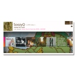

Zune Social is a beta online community Web site that gives people a place to share their music tastes, knowledge and experiences with others. Powered by the music the community is listening to, Zune Social extends the connection between Zune customers from device-to-device to PC-to-PC.
-
Details
- Images
- Features
-
Create your musical identity - Dynamic online Zune Cards automatically reflect your musical preferences based on the music you play on your device or your PC through the Zune software. Personalize your Zune Card with your own picture, custom backgrounds and more.
Develop your music discovery network - Invite friends, send and receive song recommendations, and post comments as you develop your Zune profile page. You can even post your Zune Card to today's most popular social networking sites. Wherever your Zune Card is located, the content will update automatically based on the music you're currently playing.
Try before you buy - When you find a new artist or song that looks interesting - while browsing the Zune community pages or when you receive a song recommendation from a friend - you can sample a 30-second clip. If you like what you hear, link directly to Zune Marketplace to buy the song using Microsoft Points or a Zune Pass.
More ways to discover - Browse your friends' Zune Cards and profile pages, or check out your favorite artists' pages to find other listeners with similar musical tastes. Each artist and album page will rank the top listeners; it's easy to click on their Zune Cards and see what they're listening to. Check out Zune Social community-generated charts to see the most-played artists, songs and albums, or read comments and recommendations posted by other Zune community members on album and artist pages.

{kind=link}
{kind=link}